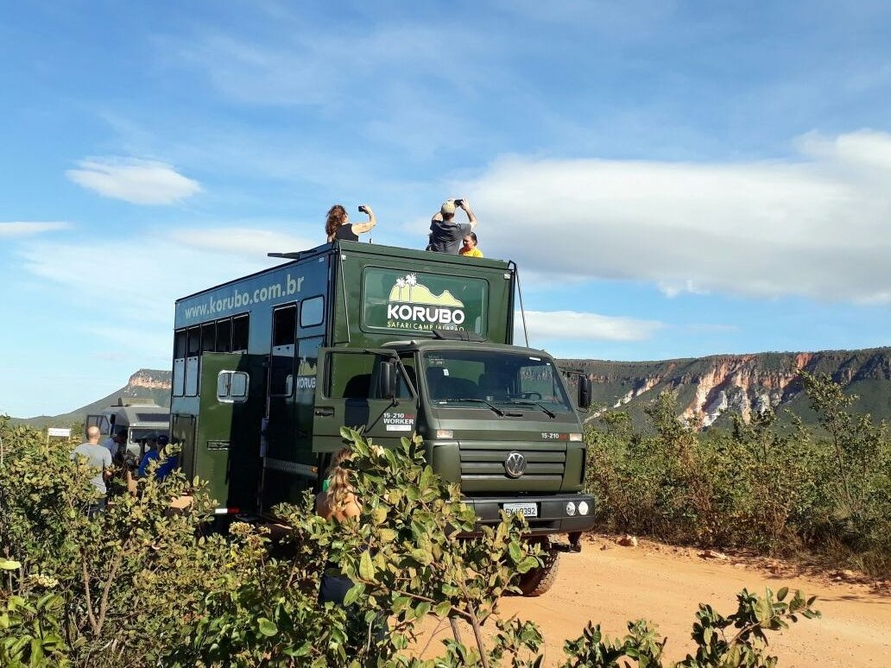
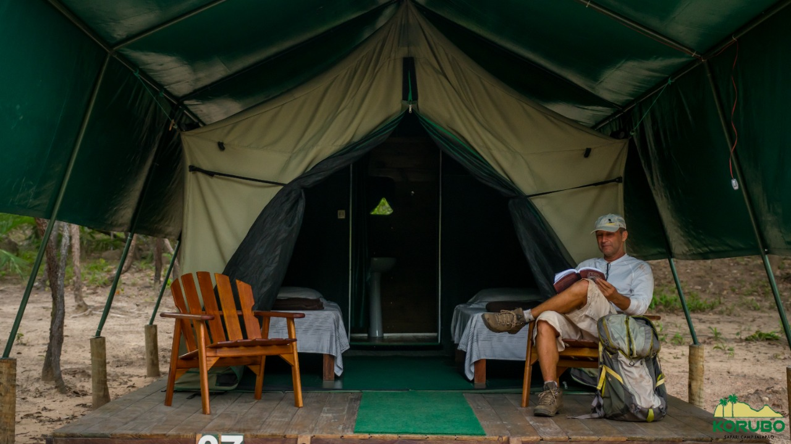
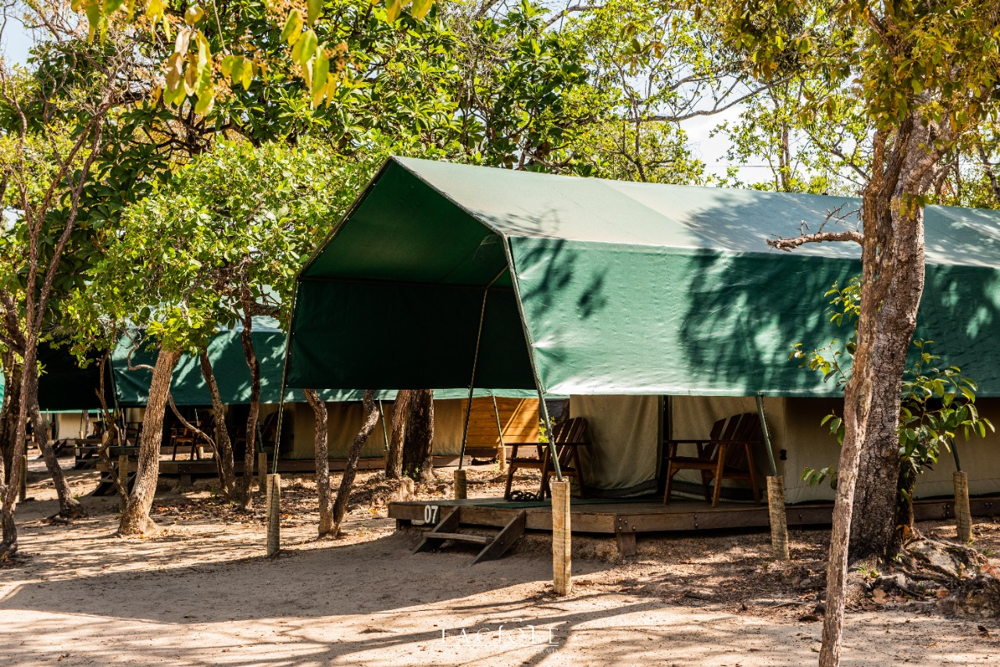
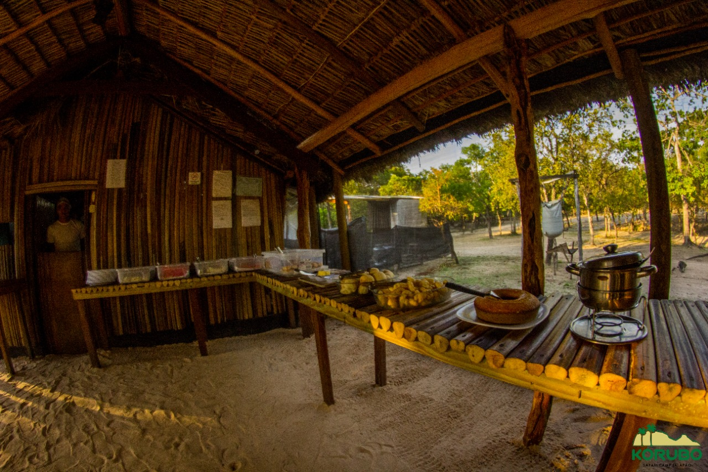
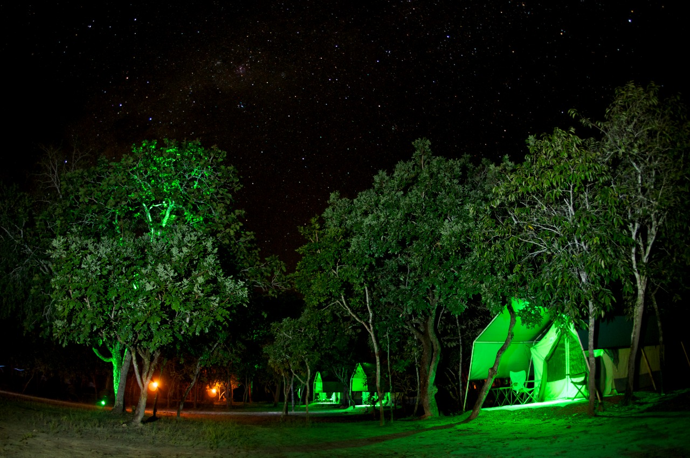

Turismo
de Experiência
Empresa oferece passeio pelo Tocantins em caminhão Overland e hospedagem estilo Glamping
São diversas as formas para explorar e vivenciar emoções no cerrado tocantinense, aqui, a experiência inicia no transporte utilizado para fazer o percurso: caminhão Overland! “Overland”, significa “por terra” e é um termo utilizado para viagens de aventura e exploração, que começa na estrada e segue até o modo de se hospedar.
Já imaginou acampar com um pouco mais de conforto? É possível no estilo Glamping, que une o glamour e o camping, somados às práticas do turismo sustentável. O contato com a natureza é a principal atração nesse estilo de viagem, por isso, o viajante tem que estar disposto a caminhar por trilhas e passar por estradas de terra.
O LUXO NAQUELAS BANDAS É ESTAR LONGE DA CIVILIZAÇÃO
A recompensa está nos banhos de rios e cachoeiras, ao mesmo tempo em que contempla a natureza e a riqueza da cultura local. Ficou interessado? Segue lendo a entrevista realizada com os proprietários da agência Korubo, Cinthia e Luciano Cohen, que estão operando no Tocantins desde 2001 e oferecem atividades turísticas de experiências e sustentáveis.
Como surgiu a empresa Korubo?
Quando nós da Korubo descobrimos as riquezas do Jalapão em 1991, vimos que a melhor maneira de conhecer esse lugar surpreendente era por meio do Ecoturismo. Como trabalhávamos com outras coisas, demorou alguns anos para que abandonássemos nossas carreiras para investir no sonho Korubo. O grande estalo foi quando Luciano avistou um caminhão Overland, que seria ideal para circular por aquelas estradas e trilhas difíceis. Pronto: estava dado o empurrão que faltava para transformarmos nossa paixão por aventura em negócio. Assim nasceu a Korubo, em 2001.
Qual o significado por trás do nome escolhido (Korubo - Safari no Jalapão)?
O nome, de origem indígena, significa “coberto de areia, de cinza, sujo de barro”, definição que tem tudo a ver com os percursos poeirentos hoje vencidos por nosso valente caminhão. SAFARI, na língua Swahili significa originalmente JORNADA o que faz com que a viagem seja todo o percurso e não somente um destino.
Qual foi o incentivo para focar no ecoturismo na região?
Mais do que descobrir um local de paisagens intactas e impressionantes, vimos que precisávamos mostrar esse local único a mais pessoas, desde então, o nosso sonho tinha se tornado realidade: ser referência na principal agência de ecoturismo no Jalapão e referência em Glamping no Brasil. Naqueles tempos, o caminhão Overland fazia viagens itinerantes e participativas por vários destinos de natureza. Anos depois, focamos no Jalapão e transformamos a Korubo em agência de viagens de ecoturismo na região. O luxo naquelas bandas é estar longe da civilização, é apreciar o silêncio, contemplar a natureza, sentir-se parte da paisagem.
Inicialmente, a estrutura do acampamento era mais simples: com barracas pequenas, camas de campanha, banho com solar shower (bolsas de plástico pretas aquecidas ao sol) e banheiro comunitário. Hoje, o espaço oferece barracas grandes, com opção de cama de casal ou duas camas de solteiro, e contam com pequenos leds que acumulam energia solar e ajudam os visitantes a se situar, já que não há energia elétrica no local. Novos banheiros foram construídos e vários chuveiros estão à disposição dos hóspedes.
Quais são as atividades de experiência que a empresa Korubo Safari oferece dentro do roteiro turístico?
A viagem começa em Palmas e o roteiro é bem completo: inclui os transfers, acomodação em Palmas e no Jalapão, refeições e passeios. Temos 2 saídas semanais para o Safári no Jalapão:
Pacote Trilha e Praia – 7 dias/6 noites (Sexta à Quinta)
Pacote Essencial – 6 dias/5 noites (Terça à Domingo)
Conhecemos todos os principais atrativos como Dunas, Sussuapara, Cachoeira da Formiga, Cachoeira da Velha, Fervedouro do Ceiça e Soninho (este último exclusivo para nossos viajantes) e Mirante da Serra (no roteiro Trilha e Praia). Oferecemos também a Extensão Opcional para a região das Serras Gerais para conhecer os atrativos da Lagoa do Japonês e Pedra Furada.
Qual o diferencial da estrutura da Korubo?
O Safari Camp Korubo está no coração do Jalapão, em lugar selvagem, preservado, à beira do Rio Novo, um dos últimos rios de água potável do mundo. São 15 tendas, cada uma para duas pessoas com camas confortáveis e banheiro individual (pia e sanitário). Temos boxes individuais e deliciosas duchas com aquecimento solar. A estrutura do acampamento não envolve construções de alvenaria e está integrada à paisagem. Usamos energia alternativa, empregamos trabalhadores nativos e incentivamos a produção e comercialização do artesanato local. Os veículos 4×4 da Korubo foram desenvolvidos especialmente para propiciar segurança e confiabilidade. As janelas com amplas áreas envidraçadas oferecem excelente visibilidade, alguns ainda possuem mirantes externos proporcionando uma maneira exclusiva de apreciar as paisagens durante a jornada.
 Por: Jéssica Sá